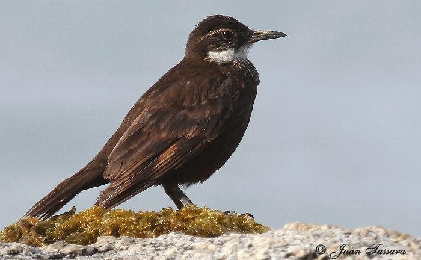
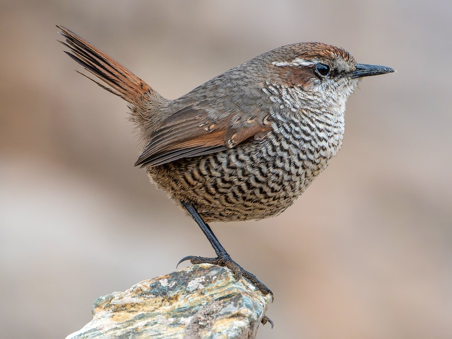
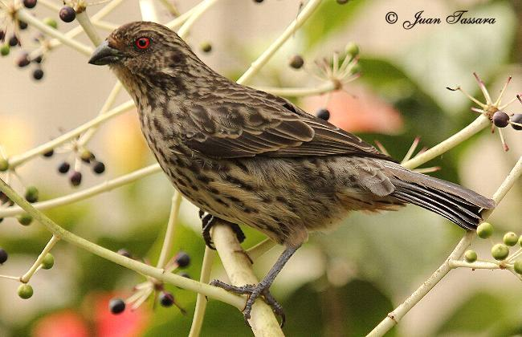

Bienvenid@!
CoAviario es una iniciativa que tiene como objetivo llevar un registro de avistamiento de aves chilenas para regular el cambio en su población debido a los recientes fenómenos climáticos. Instríbete como voluntari@ para ayudarnos a mantener con vida la fauna chilena, registrando tus avistamientos de nuestras especies nativas. Gracias por ser parte!


